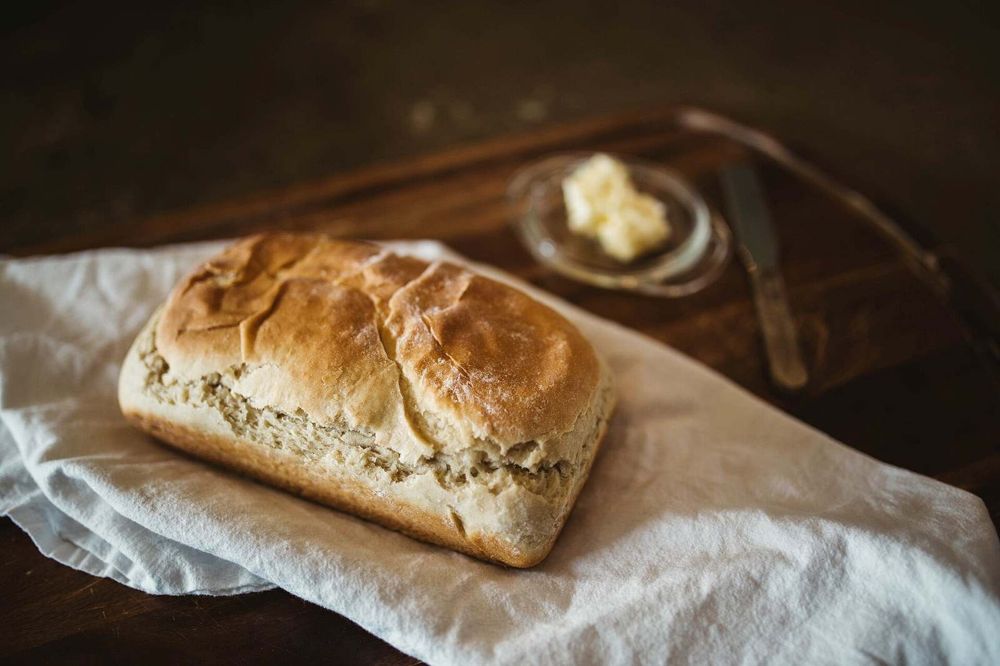

2025 ANNUAL REPORT · OPEN BOOKS
2025 ANNUAL REPORT · OPEN BOOKS
Our 2025 books, open in plain English
These figures measure different things: $5.73M consolidated covers Global Fellowship plus affiliated ministries MissionStream and BOLK, $2.13M covers Global Fellowship alone, and Home Office operations ($251.6k) are reported separately. God alone brings spiritual fruit, so every tally sits beside its exact scope.
| 2025 Field Ministry Report | Reported | Definition & Scope |
|---|---|---|
| People in unreached communities who heard the Gospel | 25,000+ | Self-reported 2025 tallies across regional teams. |
| Bibles distributed | 8,000+ | Self-reported 2025 Scripture distribution alongside regional mother-tongue Scripture translation. |
| Baptisms | 1,000+ | Self-reported 2025 believer baptisms in local congregations. |
| Churches planted | 230 | 2025 reported count; not compared to 2024 while annual counting definitions are aligned across regions. |
| 2030 strategic goal | 63 countries | “63 by 2030” goal, not a current footprint. |
Field Giving, Home Office Funding & ECFA Note
Our 2025 Annual Report states that 100% of gifts designated for Global Fellowship missionaries and field projects go to the field. Separately reported 2025 funding lines beside Home Office operating expenses ($251.6k; not a line-item reconciliation while Finance confirms scope): 8% admin fee ($192.5k), Home Office & fee-coverage gifts ($40.2k), rental income ($33k), and WMN Inc ($14.5k). *Pending Finance review of BOLK affiliate description, 8% admin-fee scope, and $5.9M Report reconciliation before release.
ECFA note: Global Fellowship (501(c)(3), EIN 68-0214543) is not ECFA-accredited; instead, we share our 2025 Statement of Activity and Statement of Financial Position via finance@globalfellowship.org and Candid (ID 8043461), keeping annual audit costs out of lean Home Office resources.
Around a Borrowed Table
Where neighbors open Luke 15 in their mother tongue, care for one another through winter, and gather under shepherds who belong to the same street.
Three Thursdays after winter illness kept a widowed neighbor from opening her market stall, she carried her own wooden stool across the courtyard and sat beside the borrowed table. Before the tea cooled, she asked which chapter of Luke came next. During those three weeks, the small circle of local believers had pooled rice, watched her younger children after school, and sung psalms outside her doorway.
For years, families in that district had no congregation teaching Scripture in their mother tongue within walking distance. Now, every Thursday evening, plastic chairs are gathered across that narrow courtyard around one borrowed wooden table. Two households read the Gospel of Luke aloud together, pausing whenever an elder aunt or teenage neighbor wants to hear a paragraph twice.
Each evening begins the same way: before anyone opens a Bible, the host pastor asks whose parent needs transport to the clinic before Friday, then reads the parable of the lost coin slowly so grandparents who never attended school can retell it by heart.

A cross-cultural teammate sits near the corner of the table, listening more than speaking and writing down neighborhood idioms from the local pastor who leads the discussion. When the rice pot is rinsed and children head inside, the local believers decide together whom they will visit on Friday and which chapter of Luke they will open next.
“It is our vision to plant a Gospel witness within 30 minutes of everyone.”
A prayerful longing shared across our global fellowship, never a measured coverage claim.